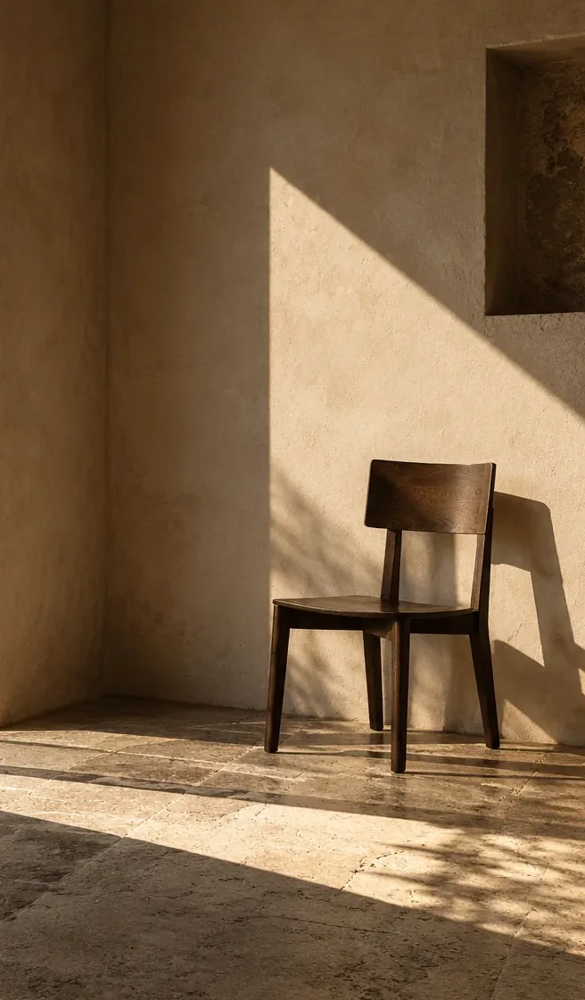

STUDY 03 / SPACE / ARCHITECTURE / LIGHT
IN
BETWEEN
A room is never truly empty.
One of three visual studies developed for the PLAIN SIGHT identity. Imagery and narratives are self-directed.

01 / THE PREMISE
Learn to
notice.
Light enters an empty room and becomes a temporary architecture. A chair, an opening, a shadow: almost nothing, and enough.
A single AI-generated spatial composition is observed at different scales. The selected crops are intentionally one scene, not a fabricated architectural photoshoot across multiple sites.



02 / THE EDIT
The edit
is the idea.
These crops are not presented as separate original photographs. Their purpose is to show how negative space, scale and photographic sequence affect the reading of the same source material.
Source disclosure: One AI-generated architectural composition and three editorial crop variants; final repeat shows the full frame.